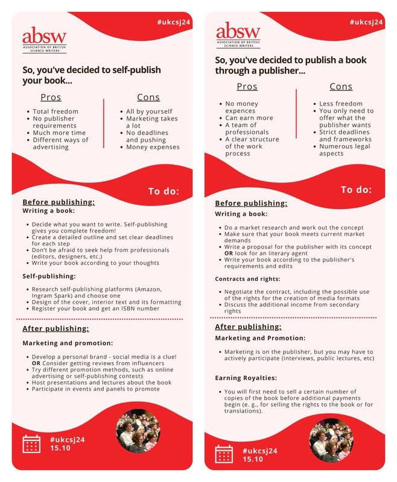
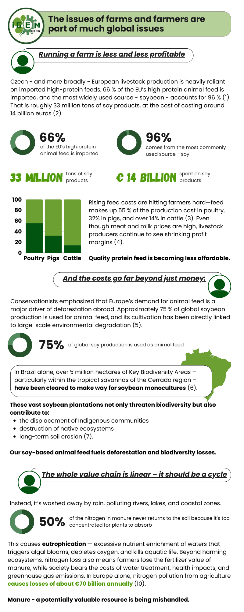
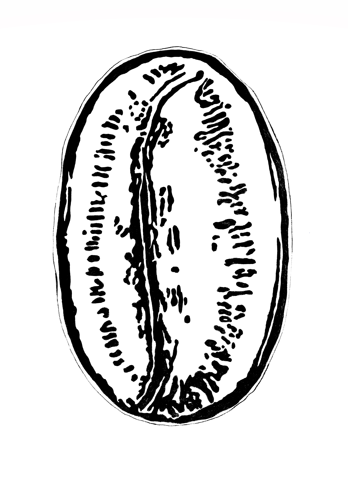
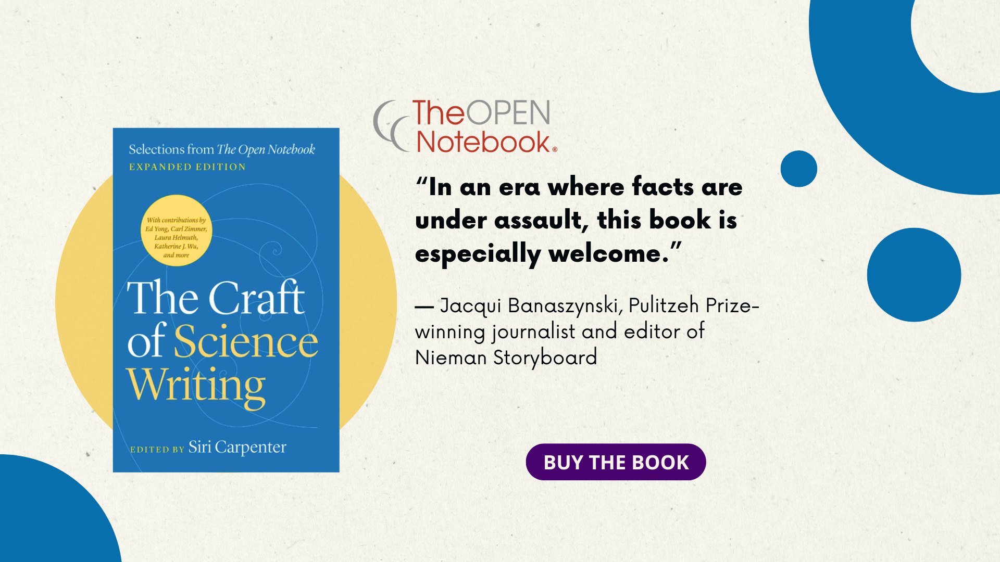
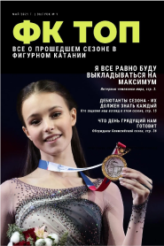

Science - and not only - design
Infographics
Infographics are an incredibly successful way to explain anything! Visualizing even the most complex data makes it easier to understand.
I think that great infographics can be made almost anywhere, but most often I use Figma, Tableau, Canvas and sometimes other auxiliary programs.
I like to think of infographics as a story - helping the reader move through the image. This infographics were done for the Association of British Science Writers and Hyperskill in 2025 and 2023.


Layouts and web-pages
Even complex information can become more easily digestible. The combination of visual storytelling and highlighting always makes understanding easier. This projects was done for iGEM in 2025.
Photo
Science is beautiful - why not show it? My and my colleagues' work in microphotography was even awarded the National Science Fidelity Award in 2017.

Science illustration
Sometimes I draw in the classic scientific illustration style. This piece was done for a local cafe in 2018.

Graphic design
This piece along other designs was done for the THE OPEN NOTEBOOK in 2025.
What else?
Packaging design, patterns, magazines... Where will the road lead us?
